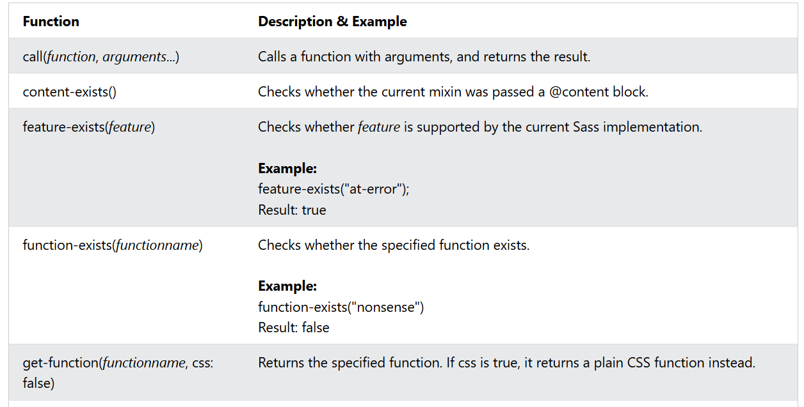
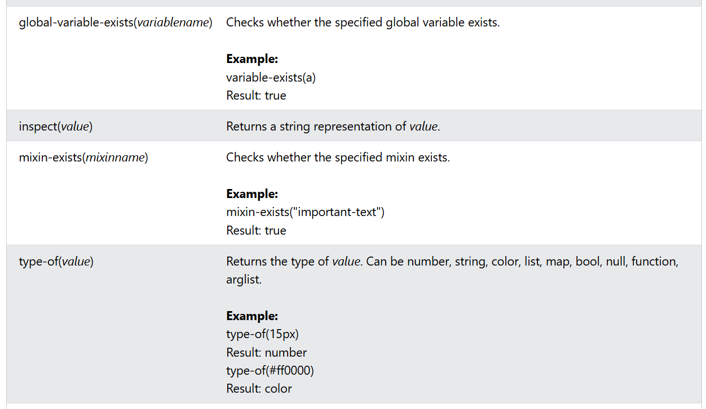
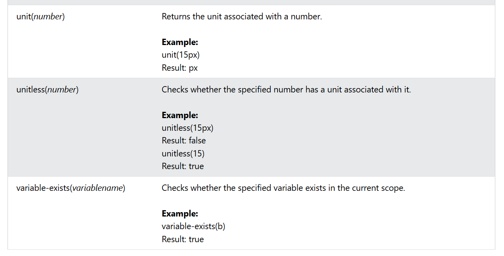

The introspection functions are rarely used when building a stylesheet. However, they are valuable if something does not work properly - to figure out what's going on: like debugging functions.
The following table lists all introspection functions in Sass:
  